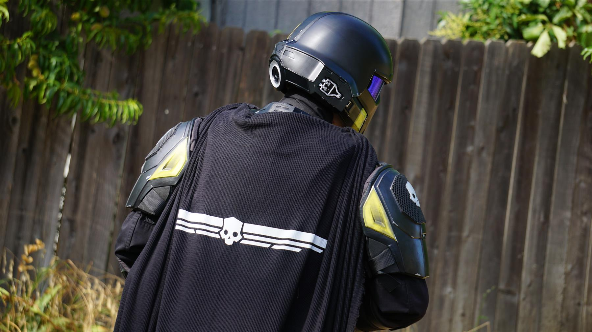
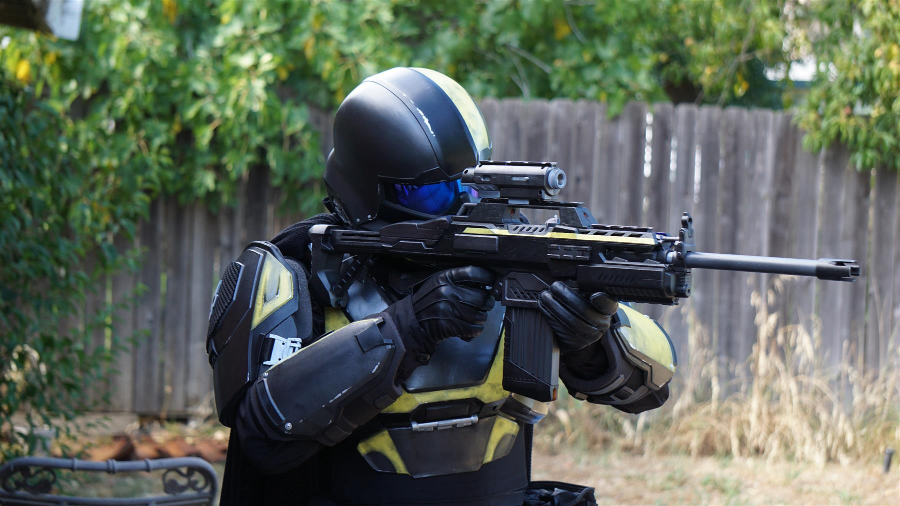
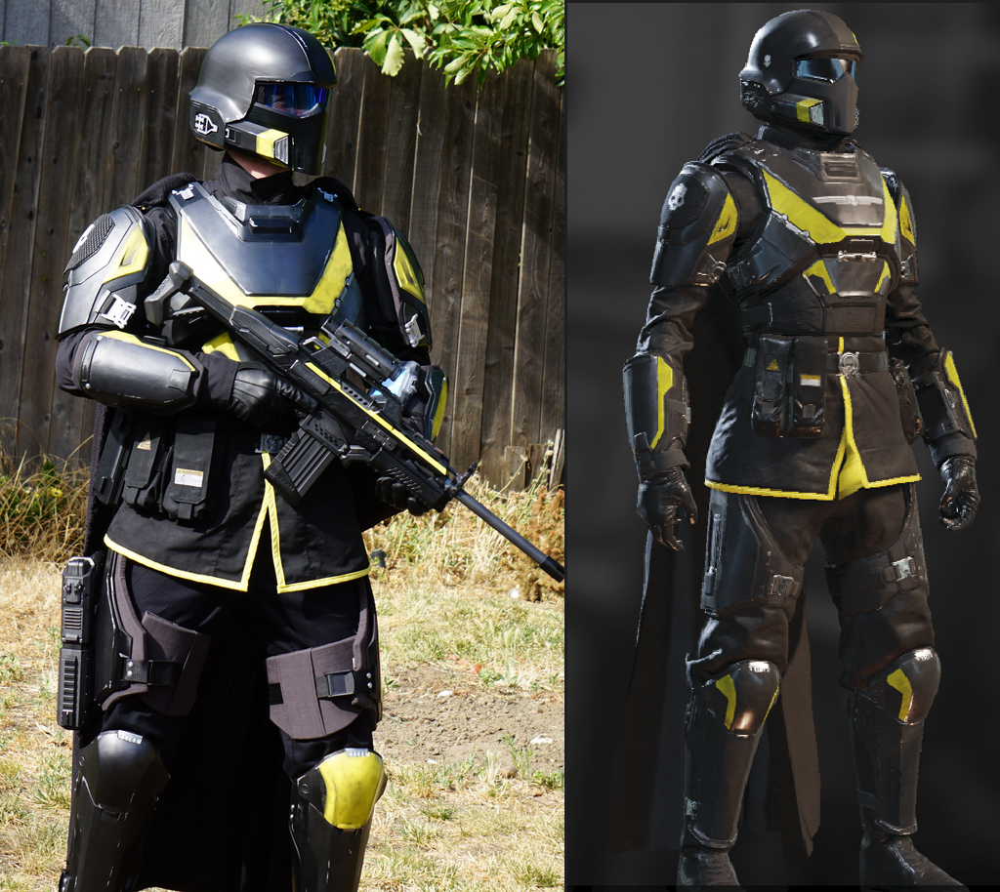

This armor set is complete, and the page now serves as a record of the finished build, test fits, and the fabrication decisions that got it there.
The B-01 armor is a full wearable costume project balancing shape accuracy, mobility, and layered materials. It combines printed plates, sewn under-structures, metal details, and paint treatment into a final suit that still needs to move like clothing.


Final Build State
The finished suit has the things I wanted most out of it: a strong in-game silhouette, convincing layering between hard and soft materials, and a paint pass that stops the printed parts from reading like raw plastic. Getting there meant refining fit, cleaning up the soft goods, and making sure the whole thing behaved like wearable gear instead of separate components strapped together.
That is really the whole challenge of a build like this. The digital files can look great on their own, but the final costume only works if the undersuit, straps, spacing, and body movement all cooperate under real use.

Reference and Translation
Part of the fun in game-costume work is translating a clean game render into something that still feels believable once it has seams, closures, body mechanics, and material thickness. This build lives in that space between prop making and clothing.
